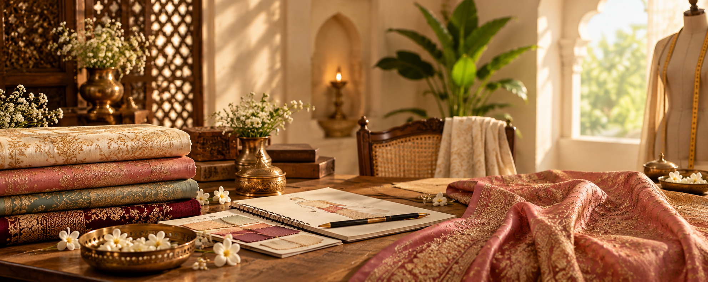
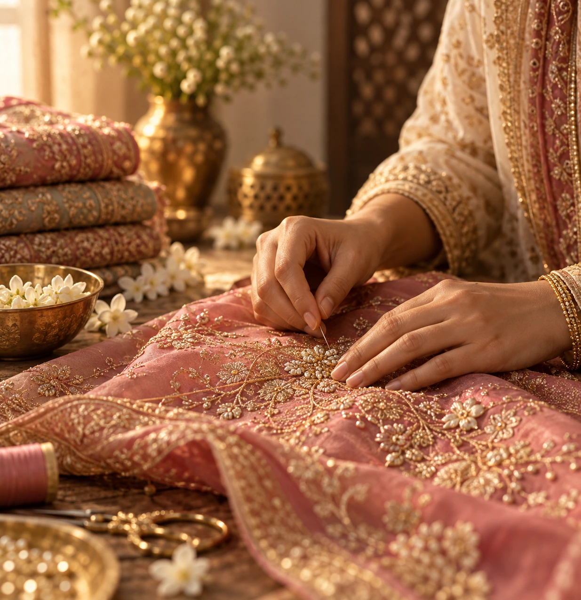

Curated With Care
Every piece is thoughtfully selected with attention to fabric, detail, colour and overall elegance.

A JOURNEY OF FAITH, FASHION AND YOU
A vision shaped by timeless Indian elegance, thoughtful curation and a belief that what we wear should always feel beautifully our own.
THE HEART BEHIND THE BRAND
ShriVatsaDarbar was created from a simple belief: beautiful ethnic wear should feel personal, graceful and timeless. Every saree and suit we curate is chosen with the intention of bringing together traditional Indian craftsmanship and the individuality of the woman who wears it.

With Love, For Every Woman
THE BEGINNING
The idea behind ShriVatsaDarbar began with an appreciation for the beauty found in Indian textiles — the richness of fabric, the detail of embroidery and the quiet elegance of a beautifully finished piece.
Over time, that appreciation became a vision: to create a carefully curated destination where women could discover sarees and suits that feel elegant without feeling complicated.
Rather than simply filling a catalogue, the goal is to select pieces with character — designs that can become part of celebrations, occasions and everyday moments.
THE FOUNDER'S PHILOSOPHY
“Elegance is not about following every trend. It is about finding something that feels beautifully, authentically yours.”
That belief shapes every part of ShriVatsaDarbar — from the fabrics we look for to the details we notice and the way we want every customer to feel when choosing something from our collection.
WHAT WE BELIEVE
Every piece is thoughtfully selected with attention to fabric, detail, colour and overall elegance.
We look beyond fleeting trends for pieces that can remain beautiful season after season.
Fashion should feel personal. Our collections are chosen for women who want to express their own style.
THE JOURNEY
THE IDEA
An appreciation for fabrics, embroidery and the timeless beauty of Indian ethnic wear became the foundation of the vision.
THE VISION
The focus became clear: select pieces that combine quality, elegance and individuality rather than simply following trends.
ShriVatsaDarbar
Sarees and suits became the beginning of a growing collection created for celebrations, occasions and beautiful everyday moments.
THE FUTURE
The journey continues with the same commitment to thoughtful selection, premium presentation and a customer experience built around care.
Discover the ShriVatsaDarbar collection — thoughtfully selected for women who appreciate tradition, elegance and their own individuality.
Explore the Collection